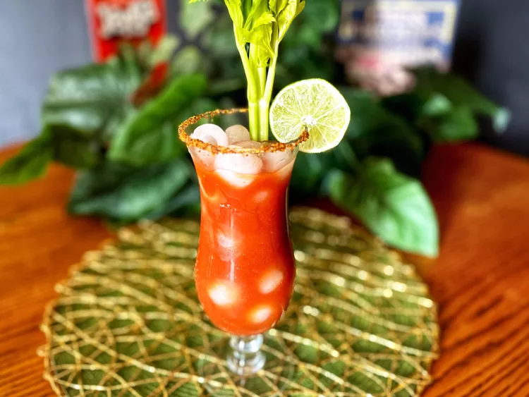

Description
This Bloody Maria is a perfect example of the popular Bloody Mary with a twist, with tequila instead of vodka and Tajin seasoning instead of celery salt.
Ingredients
- 1/2 teaspoon chile lime seasoning (such as Tajin®)
- 4 fluid ounces tomato juice
- 2 fluid ounces tequila
- 1 teaspoon freshly squeezed lime juice
- 2 dashes Worcestershire sauce
- 2 dashes hot sauce (such as Tabasco®)
- 1/2 teaspoon prepared horseradish
- 1/4 teaspoon celery seed
Steps
- Place Tajin on a plate. Moisten the rim of a glass with a lime wedge. Press the moistened rim into Tajin. Set aside.
- Fill a cocktail shaker with ice. Add tomato juice, tequila, lime juice, Worcestershire sauce, Tabasco, horseradish, and celery seed. Shake until the outside of shaker is frosted; strain into the prepared glass.